pmp备考-倒计时33天
更新日期:
距离2018年3月份PMP考试仅剩33天
回老家呆了两天没看书也没学习，然后做题真的是两眼一抹黑。题目在书里都能找到出处，就是想不起来！
1
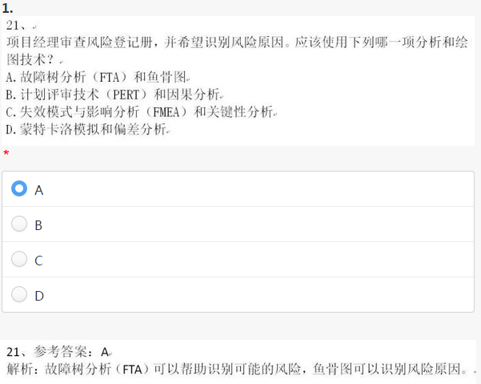
这道题主要是考一些分析技术和绘图技术。
故障树分析（FTA）：形状为倒立的树状逻辑因果图，常用于帮助识别可能存在的风险
计划评审技术（PERT）：常用于估算活动时间，当活动的估算无法确定时，使用其乐观估算、悲观估算和最可能估算的加权平均值作为估算结果的一种技术。
因果分析：通过结果找原因
失效模式与影响分析：用来检查产品（在整个系统和／或较低层次上）的所有可能失效模式。分析产品的每个部件的各种可能失效模式及其对该部件可靠性的影响，并确定每种失效模式本身或与其他失效模式联合将对产品或系统可靠性产生的影响，及对该部件必备功能产生的影响
蒙特卡洛分析：工作的可能成本或持续时间的概率分布。
偏差分析：是一种确定实际绩效与基准的差异程度及原因的技术。可利用项目绩效测量结果评估偏离范围基准的程度。
下面解析一下7种基本质量工具的使用方法：
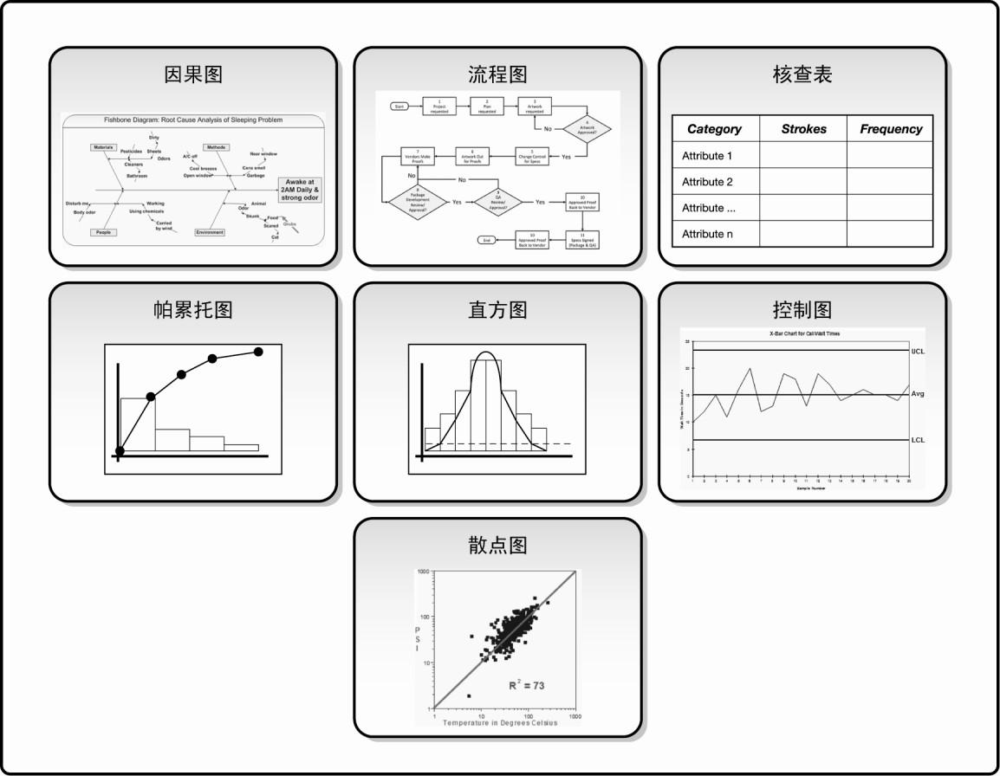
1、因果图
又称鱼骨图或石川图。问题陈述放在鱼骨的头部，作为起点，用来追溯问题来源，回推到可行动的根本原因。
2、流程图
也称过程图，用来显示在一个或多个输入转化成一个或多个输出的过程中，所需要的步骤顺序和可能分支。
3、核查表
又称计数表，是用于收集数据的查对清单。它合理排列各种事项，以便有效地收集关于潜在质量问题的有用数据。
4、帕累托图
是一种特殊的垂直条形图，用于识别造成大多数问题的少数重要原因。
5、直方图
是一种特殊形式的条形图，用于描述集中趋势、分散程度和统计分布形状。 与控制图不同，直方图不考虑时间对分布内的变化的影响。
6、控制图
用来确定一个过程是否稳定，或者是否具有可预测的绩效。根据协议要求而制定的规范上限和下限，反映了可允许的最大值和最小值。超出规范界限就可能受处罚。
7、散点图
又称相关图，标有许多坐标点（X,Y），解释因变量Y相对于自变量X的变化。相关性可能成正比例（正相关）、负比例（负相关）或不存在（零相关）。如果存在相关性，就可以画出一条回归线，来估算自变量的变化将如何影响因变量的值。
2
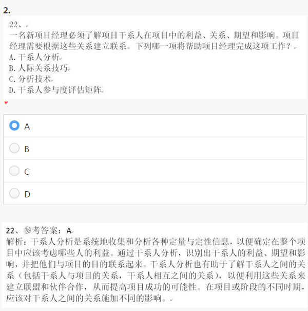
此题主要是考察对干系人分析技术的掌握程度。
关于干系人分析，需要记住 3大步骤，4种模型
识别全部潜在项目干系人及其相关信息，如他们的角色、部门、利益、知识、期望和影响力。关键干系人通常很容易识别，包括所有受项目结果影响的决策者或管理者，如项目发起人、项目经理和主要客户。通常可对已识别的干系人进行访谈，来识别其他干系人，扩充干系人名单，直至列出全部潜在干系人。
分析每个干系人可能的影响或支持，并把他们分类，以便制定管理策略。在干系人很多的情况下，就必须对干系人进行排序，以便有效分配精力，来了解和管理干系人的期望。
评估关键干系人对不同情况可能做出的反应或应对，以便策划如何对他们施加影响， 提高他们的支持，减轻他们的潜在负面影响。
有多种分类模型可用于干系人分析，如：
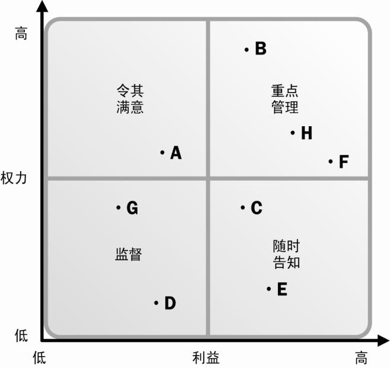
权力/利益方格。根据干系人的职权（权力）大小及对项目结果的关注（利益）程度进行分类。
权力/影响方格。根据干系人的职权（权力）大小及主动参与（影响）项目的程度进行分类。
影响/作用方格。根据干系人主动参与（影响）项目的程度及改变项目计划或执行的能力（作用）进行分类。
凸显模型。根据干系人的权力（施加自己意愿的能力）、紧急程度（需要立即关注） 和合法性（有权参与），对干系人进行分类。
3
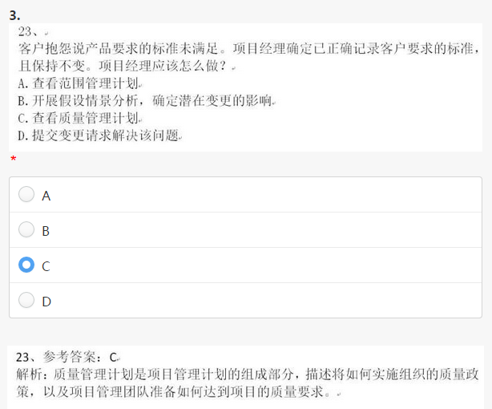
此题意在考察当阶段交付过程中发现质量问题时，需要对质量管理计划进行查看。质量管理计划描述了项目质量保证和持续过程改进的方法。
4
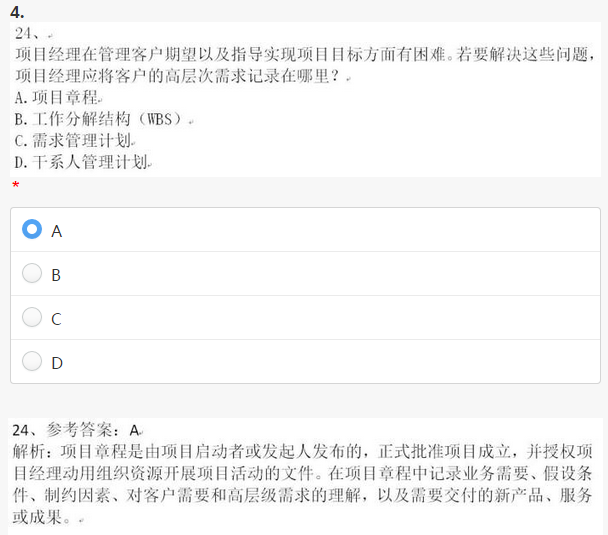
高层次的需求是项目章程一部分。
5
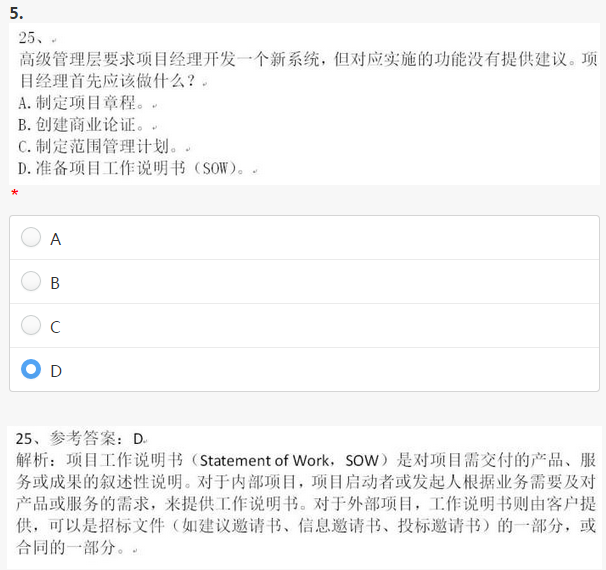
此题与4题不同，项目工作说明书是对项目 需要交付的产品、服务或成果的叙述性说明
6
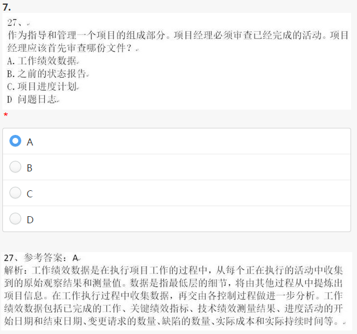
审查活动时，最先审查的是工作绩效数据，其中包括在执行项目工作的过程中，从每个正在执行的活动中收集到的原始观察结果和测量值。例如，工作完成百分比、质量和技术绩效测量值、进度活动的开始和结束日期、变更请求的数量、缺陷数量、实际成本和实际持续时间等。
7
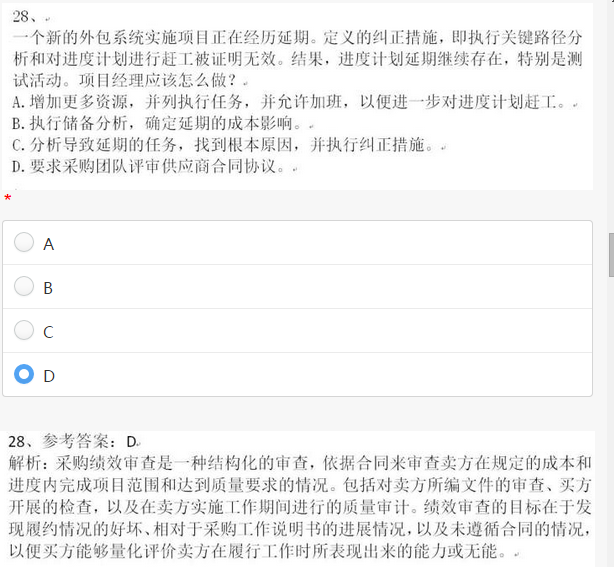
详见采购绩效审查：是一种结构化的审查，依据合同来审查卖方在规定的成本和进度内完成项目范围和达到质量要求的进展情况。
如发现卖方在履行合同过程中出现无法交付情况下，审查此合同
8
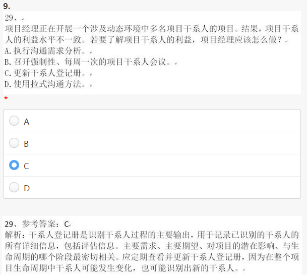
详见5.2.1.5 干系人登记册
9
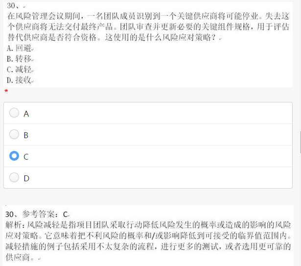
此题需要掌握风险的4种应对策略
规避。风险规避是指项目团队采取行动来消除威胁，或保护项目免受风险影响的风险应对策略。通常包括改变项目管理计划，以完全消除威胁。项目经理也可以把项目目标从风险的影响中分离出来，或者改变受到威胁的目标，如延长进度、改变策略或缩小范围等。最极端的规避策略是关闭整个项目。在项目早期出现的某些风险，可以通过澄清需求、获取信息、改善沟通或取得专有技能来加以规避。
转移。风险转移是指项目团队把威胁造成的影响连同应对责任一起转移给第三方的风险应对策略。转移风险是把风险管理责任简单地推给另一方，而并非消除风险。转移并不是把风险推给后续的项目，也不是未经他人知晓或同意就把风险推给他人。采用风险转移策略，几乎总是需要向风险承担者支付风险费用。风险转移策略对处理风险的财务后果最有效。风险转移可采用多种工具，包括（但不限于）保险、履约保函、担保书和保证书等。可以利用合同或协议把某些具体风险转移给另一方。例如，如果买方具备卖方所不具备的某种能力，为谨慎起见，可通过合同规定把部分工作及其风险再转移给买方。在许多情况下，成本补偿合同可把成本风险转移给买方，而总价同可把风险转移给卖方。
减轻。风险减轻是指项目团队采取行动降低风险发生的概率或造成的影响的风险应对策略。它意味着把不利风险的概率和/或影响降低到可接受的临界值范围内。提前采取行动来降低风险发生的概率和/或可能给项目造成的影响，比风险发生后再设法补救，往往会更加有效。减轻措施的例子包括采用不太复杂的流程，进行更多的测试， 或者选用更可靠的供应商。它可能需要开发原型，以降低从实验台模型放大到实际工艺或产品过程中的风险。如果无法降低风险概率，也许可以从决定风险严重性的关联点入手，针对风险影响来采取减轻措施。例如，在一个系统中加入冗余部件，可以减轻主部件故障所造成的影响。
接受。风险接受是指项目团队决定接受风险的存在，而不采取任何措施（除非风险真的发生）的风险应对策略。这一策略在不可能用其他方法时使用，或者其他方法不具经济有效性时使用。该策略表明，项目团队已决定不为处理某风险而变更项目管理计划，或者无法找到任何其他的合理应对策略。该策略可以是被动或主动的。被动地接受风险，只需要记录本策略，而无需任何其他行动；待风险发生时再由项目团队处理。
10
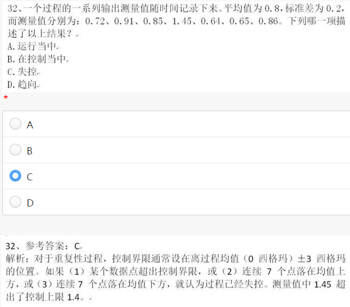
详见8.1.2.3 七种基本质量工具-控制图
如果（1）某个数据点超出控制界限，或（2）连续7个点落在均值上方，或（3）连续7个点落在均值下方，就认为过程已经失控。
11
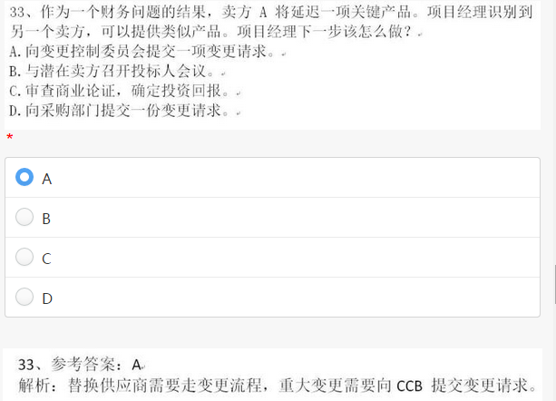
无需多解释
12
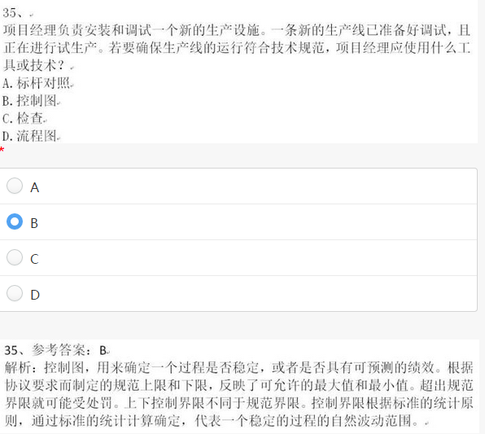
同上